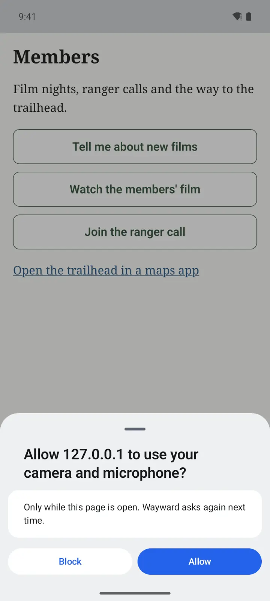
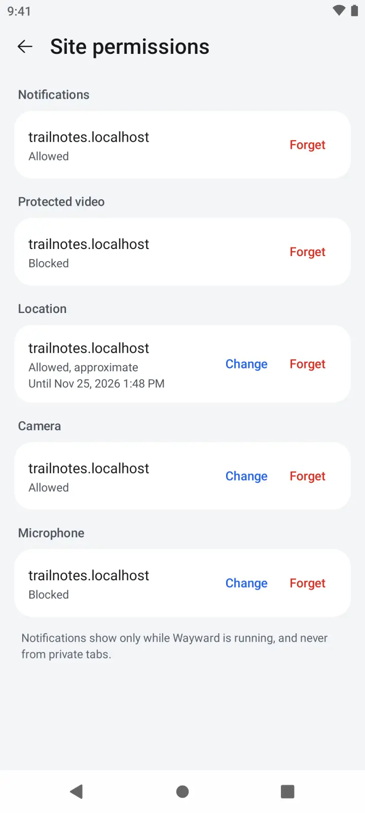

Camera, notifications and other site permissions
How-to
Sites need your permission to use your camera or microphone, send notifications or play protected video. Wayward shows each question with the site's name, so you know who's asking.
Camera and microphone
A site that wants them asks "Allow example.com to use your camera and microphone?" (or just the camera, or just the microphone). Allow works after a moment's pause, so a page can't trick you into tapping it. The answer is Only while this page is open. Wayward asks again next time. The first time, Android also asks whether Wayward itself may use the camera or microphone.
While another app draws over Wayward (a screen-dimming app, a chat bubble), this Allow doesn't take a tap, and neither do the ones for notifications and protected video. Wayward says Another app is drawing over Wayward. Close it and tap again.

Only the tab on screen can ask, and a locked tab can't. Sites can't share your screen, and they never get your phone's location: Wayward doesn't ask Android for it. A site can still guess roughly where you are from your IP address, as with any browser.
Notifications
A site that wants to send notifications asks "Allow example.com to send notifications?". Your answer is remembered. Notifications from sites you allowed show only while Wayward is running, and never from private tabs. They come in their own Android channel, Site notifications, and a tap opens Wayward. On the lock screen they just say A site sent a notification.
Wayward asks Android for its own notification permission only when it needs it: when you first allow a site to notify, or when your first download starts. If Android's notifications are off for Wayward, it tells you how to turn them on.
Protected video
Streaming sites protect their videos with DRM (Widevine), which your phone itself handles. A site asks the first time: "Allow example.com to play protected video?", and your answer is remembered. To turn protected video off everywhere, see Settings > Video and audio > Play protected video.
Links that want to open an app
When a link on a page wants to open another app, Wayward asks first: "Open in" and the app's name, saying which site the link is on. Tap Open to go to the app, or tap outside the box (or press Back) to stay. From a private tab it reminds you that private browsing doesn't carry over to the app. To never be asked, see Links that open apps in the privacy settings.
See and change your answers
Open the ⋮ menu, then Settings > Site permissions. Under Notifications and Protected video, each site shows Allowed or Blocked (and which space you answered in). Forget clears an answer, after asking, so the site asks again next time. Before any site has asked, it says No sites yet.

A site's answers are also on its shield sheet, each with Forget.
More in Privacy & security
- Lock Wayward down
- See what was blocked, and let a broken site through
- Choose how much Wayward blocks
- Hide pop-ups and overlays on pages
- Secure connections, Secure DNS and the other privacy settings
- Use private tabs
- Keep sign-ins apart with spaces
- Lock a tab, your private tabs, a space or Downloads
- Clear data, Shred a site, or delete everything